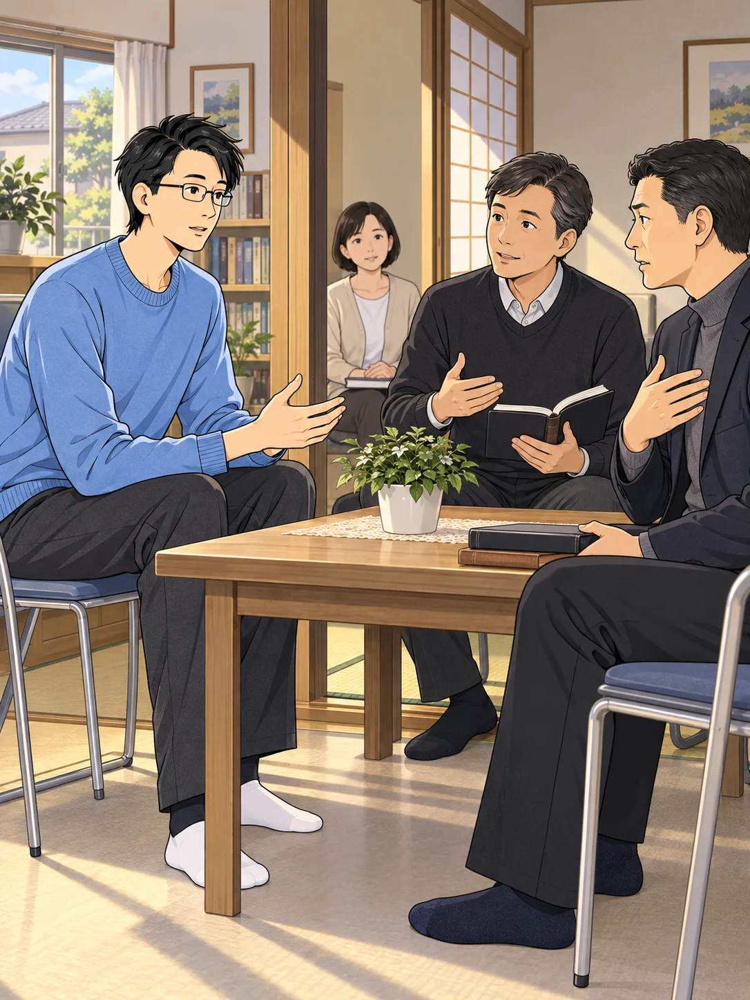
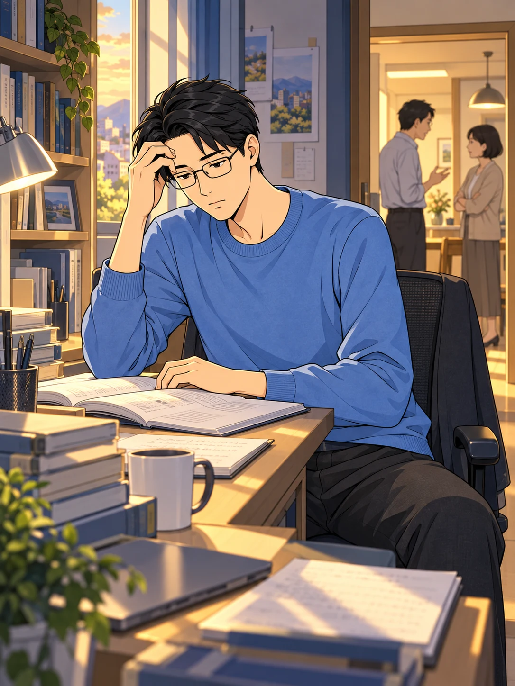
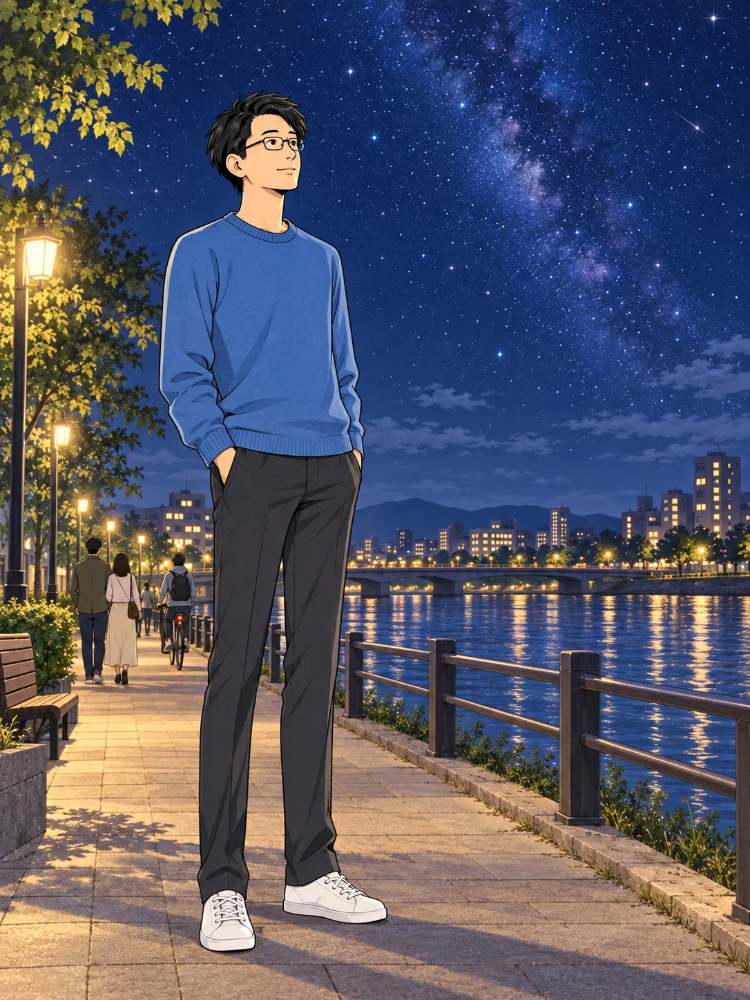
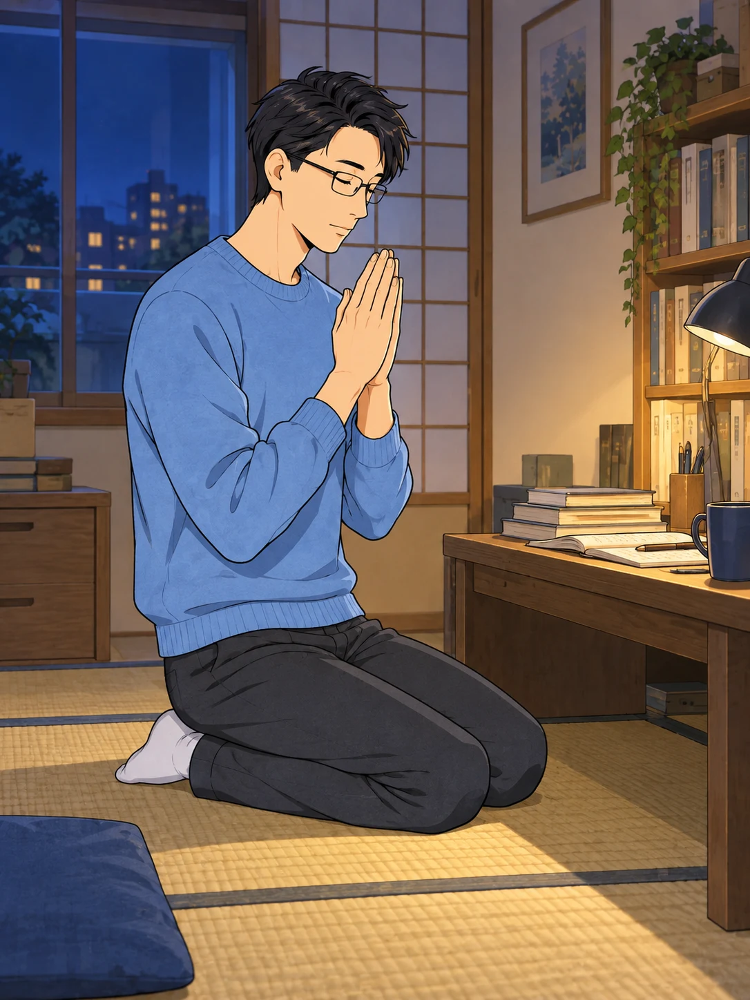
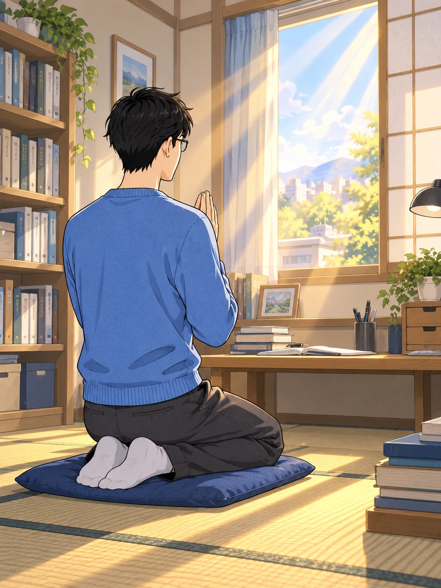
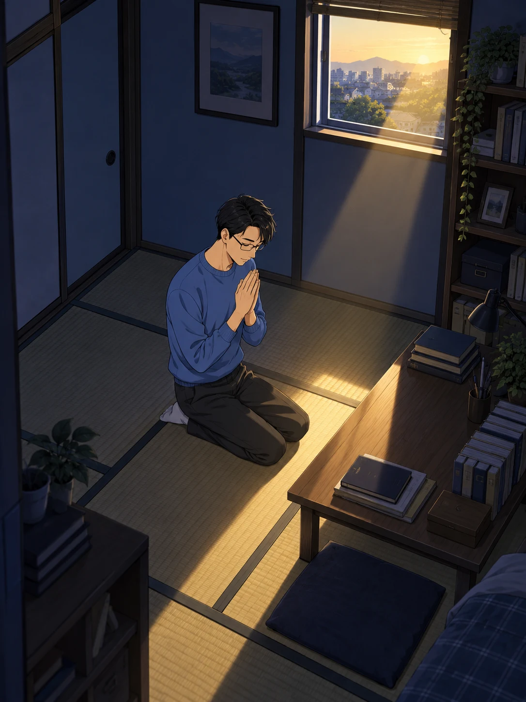

答えを求めて、
宗教書や哲学書を読み重ねた。
知りたい。
人は、何をよりどころに
生きればいいのか。
読み、考え、また別の本を開く。
問いは、簡単には閉じなかった。
本を読むだけでは、わからない。
人に会い、その教えを聞いた。

その教えは、
ここに属さない人にも
通じるのでしょうか。
話を聞くほど、
それぞれの立場の違いが見えてくる。
求めていたのは、
どこか一つの集団の正しさではなかった。

教団の都合ばかりだ……。
そのときの彼には、
答えよりも、隔たりが強く感じられた。
夜の街で、ふと足を止めた。

同じ空の下にいるのに。
人を隔てない真理は、
ないのだろうか。
誰かだけのものではない。
すべての人に通じるものを。
問いは、やがて祈りになった。

もし、普遍の真理が
あるのなら——
どうか、知りたい。
肩書きや所属のためではなく、
自分の生き方を、根底から問うために。
自分の都合に合う答えを、
求めるのではない。

誰にとっても変わらない、
普遍の真理を求めていこう。
その思いを、
静かに、深く、確かめていった。
静まり返った部屋。
祈りは、なおも続いていた。

まだ、答えは見えない。
それでも、問い続ける。